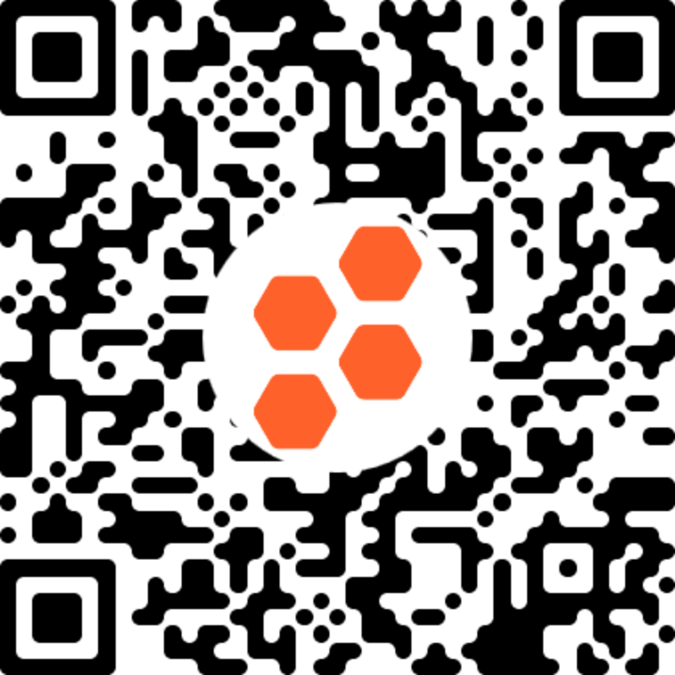

Day 2: Global distribution of biodiversity
2023-06-27
Quiz
- Visit https://gosocrative.com and enter room name NITTA9359, or scan the barcode:

What are species anyways?
In your group, discuss:
- What is a species?
Species concepts
There is no one right answer to the question, “What are species?”
Instead, there are different species concepts
Biological Species Concept (BSC)
- According to the BSC, species are groups of individuals that can interbreed and produce fertile offspring
Why the BSC?
Members of the same species can exchange genes
Members of different species cannot
Member of the same species are an evolutionary unit
Why measure biodiversity using species?
- Conceptually simple
Are there any disadvantages to measuring biodiversity with species richness?
Does not account for evolutionary history
The BSC is difficult to test experimentally
How do you experience biodiversity?
In your group, discuss:
Where do you see/experience areas of high biodiversity?
Where do you see/experience areas of low biodiversity?
Why do you think there is a difference?
Why does the distribution of species richness vary in space?
Different species are adapted for different environments
Only a few species can handle extreme environments
Why does the distribution of species richness vary in space?
- productivity
Why does the distribution of species richness vary in space?
- time
The clearest pattern in richness is the latitudinal species gradient
Species richness increases going from the poles to the equator
Due to
- environmental conditions (including human influence)
- energy
- evolutionary time
Hotspots are areas of remarkably high biodiversity
We can’t conserve everything
Hotspots are areas to prioritize for conservation